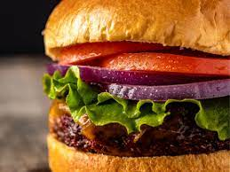

Main Page

Description
Hamburgers! a staple dish in every household following this easy and simple recipe will have all your guests drooling tonight!
Ingredients
- Ground Beef
- Garlic and Onion
- Hamburger Buns
- Lettuce
- Condiments
Steps
- Shape your ground beef into patties
- Bring your frying pan to a medium/high heat
- Add in some olive oil and place patties into pan
- Let your patties sit in the pan depending to your liking
- prepare the onions and lettuce and buns on the side
- After flipping your burgers on the pan place your bun in the pan to sear them
- remove your buns and plate them with lettuce and onions and your condiment of choosing
- Voila enjoy!